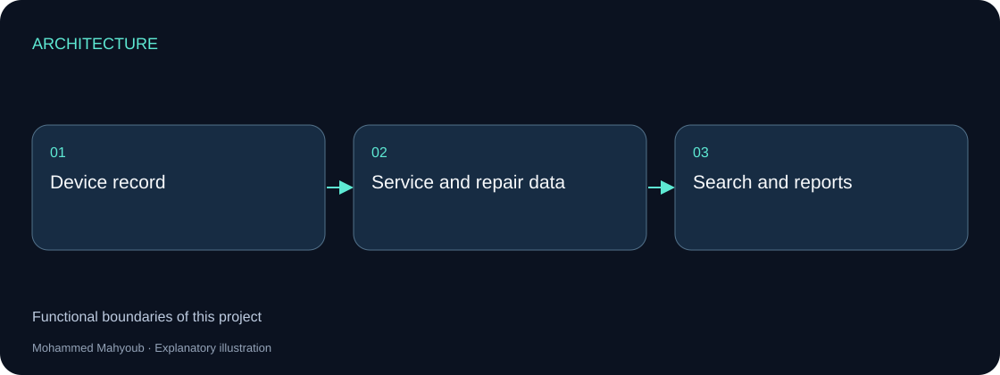
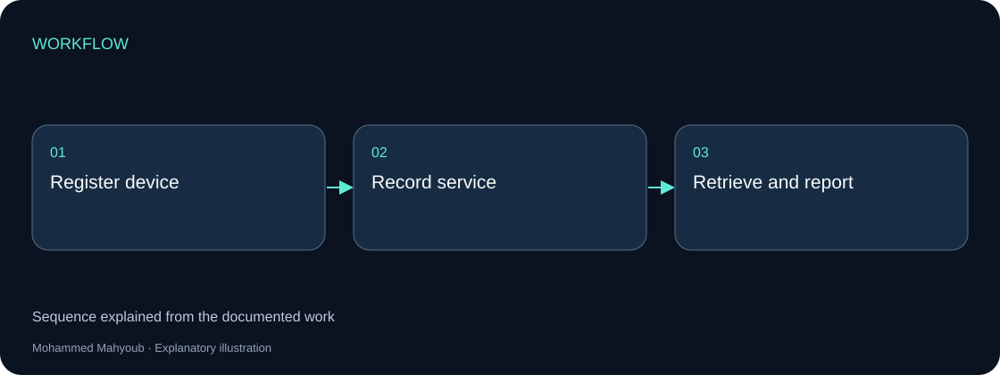
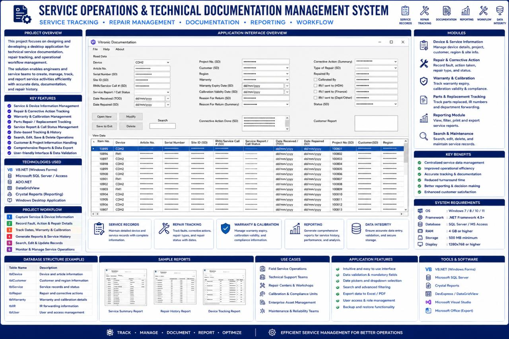

Desktop Software · Service Operations
Service Operations & Technical Documentation Management System
Developed a desktop application for device records, repair tracking, service documentation and operational reporting.
Implemented Project
System architecture

Implementation scope
The source interface shows device records, repair details and warranty/calibration fields. These records connect the equipment identity with the work performed and the documents needed for follow-up.
Engineering approach
Search and reporting make service history usable by engineers. This project has its own interface and workflow, distinct from the live monitoring console and RF calculation tools.

Visual documentation
Original project posters and interface screenshots are identified separately from explanatory source diagrams. The gallery documents this project only. Open any figure to inspect it at full available resolution.

